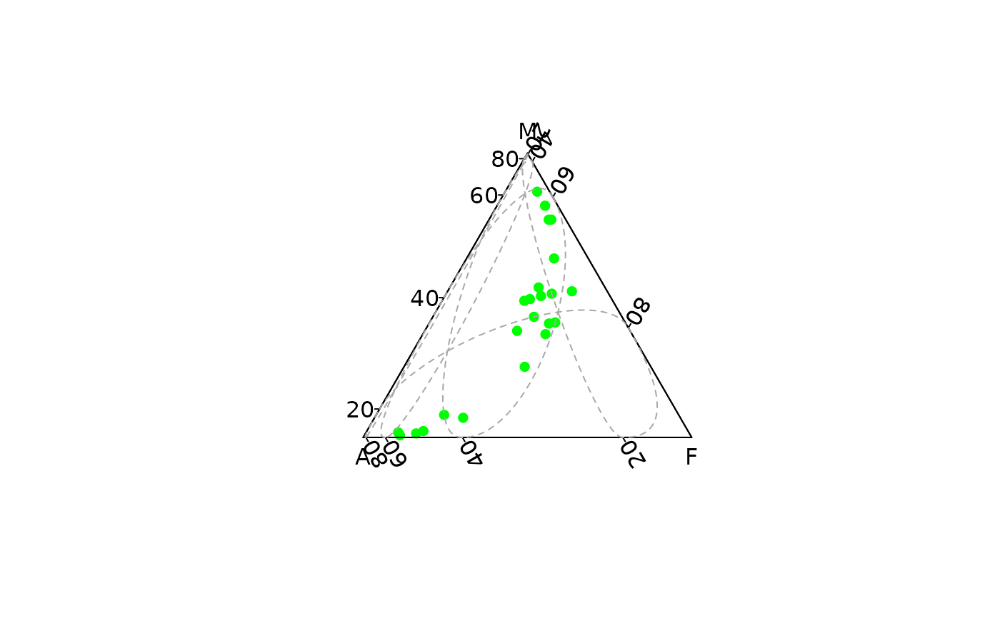
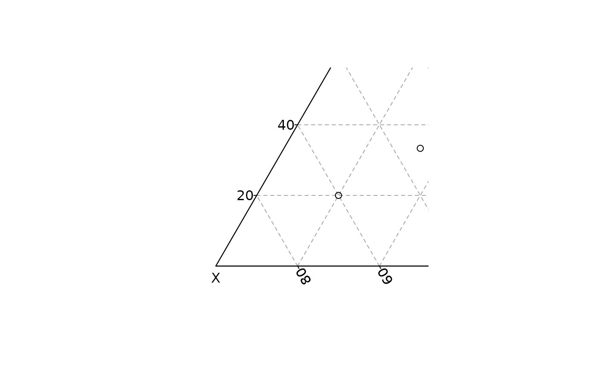

Adds a triangular grid to an existing plot.
Usage
ternary_grid(
primary = NULL,
secondary = NULL,
col.primary = "darkgray",
col.secondary = "lightgray",
lty.primary = "dashed",
lty.secondary = "dotted",
lwd.primary = 1,
lwd.secondary = lwd.primary
)Arguments
- primary
An
integerspecifying the number of cells of the primary grid inx,yandzdirection.- secondary
An
integerspecifying the number of cells of the secondary grid inx,yandzdirection.- col.primary, col.secondary
A
characterstring specifying the color of the grid lines.- lty.primary, lty.secondary
A
characterstring ornumericvalue specifying the line type of the grid lines.- lwd.primary, lwd.secondary
A non-negative
numericvalue specifying the line width of the grid lines.
See also
Other graphical elements:
ternary_axis(),
ternary_box(),
ternary_pairs(),
ternary_plot(),
ternary_title()
Examples
## Blank plot
ternary_plot(NULL)
 ## Compositional data
coda <- data.frame(
X = c(20, 60, 20, 20),
Y = c(20, 20, 60, 40),
Z = c(60, 20, 20, 40)
)
## Ternary plot
ternary_plot(coda, pch = 16, col = "red")
## Compositional data
coda <- data.frame(
X = c(20, 60, 20, 20),
Y = c(20, 20, 60, 40),
Z = c(60, 20, 20, 40)
)
## Ternary plot
ternary_plot(coda, pch = 16, col = "red")
 ## Add a grid
ternary_plot(coda, panel.first = ternary_grid(5, 10))
## Add a grid
ternary_plot(coda, panel.first = ternary_grid(5, 10))

## Zoom
ternary_plot(coda, xlim = c(0.5, 1), panel.first = ternary_grid())

ternary_plot(coda, ylim = c(0.5, 1), panel.first = ternary_grid())
 ternary_plot(coda, zlim = c(0.5, 1), panel.first = ternary_grid())
ternary_plot(coda, zlim = c(0.5, 1), panel.first = ternary_grid())